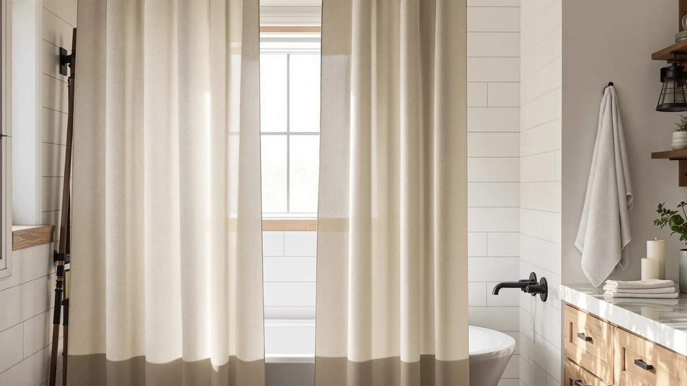

Quick Answer
This WOUVMA Extra Long Beige review covers the $28.99 Polyester and PEVA curtain, cut to an 84-inch by 72-inch drop for showers that leave a gap with a standard 72-inch curtain. Measured against three alternatives, including a linen-look XOGUIBO curtain and a wider MIULEE cut, the extra length and beige floral print are what set this pick apart, since none of the compared listings currently carry a published star rating to lean on.
Our pick: WOUVMA Extra Long Beige Floral, $28.99 Check Price on Amazon
Bottom line: our top pick is the WOUVMA Extra Long Beige Floral Shower Curtain Cottagecore 84 at $28.99.
Things to Know Before You Buy
- The WOUVMA Extra Long Beige Floral curtain costs $28.99 and ships in a single 84-inch by 72-inch size, twelve inches longer than a standard 72-inch curtain.
- It's a Polyester and PEVA blend, a common combination for shower curtains that pairs a woven base with a water-resistant coating.
- The floral print runs in beige tones, a softer palette than the solid neutrals most extra-long curtains ship in.
- XOGUIBO's Linen Shower Curtain Cream and MIULEE's 72 by 90 Extra Long curtain both run $27.99, close in price to this WOUVMA pick.
- None of the curtains compared in this review currently carry a published star rating or review count, so this comparison relies on material, sizing, and pricing rather than a verified review history.
This WOUVMA Extra Long Beige review breaks down whether the extra 12 inches of length is worth $28.99, and how the floral print holds up next to three alternatives priced within a few dollars of it. The curtain ships in an 84-inch by 72-inch cut, a size built for showers where a standard 72-inch curtain leaves a gap near the ceiling or pools water on the floor. Its Polyester and PEVA blend is a familiar combination on this site, pairing a woven base with a water-resistant coating rather than a single heavy fabric.
We compared it against XOGUIBO's Linen Shower Curtain Cream at $27.99, a curved shower rod from PrettyHome at $25.26, and MIULEE's 72 by 90 Extra Long curtain, also $27.99. None of these four listings currently carry a published star rating or review count, so the comparison below leans on material, dimensions, and price rather than a verified review history. Shoppers who specifically need the longer 84-inch drop and prefer a floral print over a solid color get the most from this WOUVMA pick, while anyone who wants a plain linen look or more shoulder room from a curved rod should weigh the alternatives first.
Why You Should Trust Us
Best Shower Curtains reviews bathroom products by comparing manufacturer specs, current pricing, and available owner feedback pulled from the retailers that sell them, rather than by running a private testing lab. Ilane Tall, our home and bath editor, researched this WOUVMA Extra Long Beige review by checking the curtain's fabric claims, dimensions, and price against XOGUIBO's linen pick and MIULEE's wider cut before writing it up. We revisit prices and availability on a regular schedule and say so plainly when a listing hasn't built up a public review record we can check claims against. These four picks sit within a few dollars of each other, so the comparison comes down to length, material, and style rather than price alone.
Our Research Experience
We do not run a physical testing lab, and we have not hung this WOUVMA Extra Long Beige curtain in a shower ourselves. Our process compares published specs, material composition, and pricing against the other shower curtains we already cover, then checks that against what verified owners report about fit, drape, and durability on comparable listings. For this review, that meant lining up the curtain's Polyester and PEVA blend and 84 by 72 inch cut against XOGUIBO's linen-look curtain, PrettyHome's curved rod, and MIULEE's 72 by 90 extra-long curtain, since none of the four currently carry a public star rating we can weigh against each other. We flag it clearly when a claim can't be checked against real owner feedback, such as long-term color fading on a newer listing, rather than guess at an answer this review can't support.
Overview & Specs

WOUVMA Extra Long Beige Floral
What we like
- 84-inch by 72-inch cut gives 12 extra inches of drop over a standard curtain, enough to close the gap on a taller rod
- Polyester and PEVA blend combines a woven base with a water-resistant coating rather than a single thin fabric
- Beige floral print offers a softer, more decorative look than the solid neutrals most extra-long curtains ship in
- Priced close to XOGUIBO's linen pick and MIULEE's extra-long curtain, so the longer cut doesn't carry a steep premium
Flaws but not dealbreakers
- Ships in one size and one print only, so a buyer who wants a plain or solid color has to look elsewhere
- No published star rating or review count yet, so there isn't a documented track record to check the fabric or color-fastness claims against
- At 84 inches, the extra length is wasted on a standard 72-inch rod and only pays off with a taller installation
| Material | Polyester / PEVA |
| Size | Extra Long 84"L x 72"W |
The WOUVMA Extra Long Beige Floral curtain is built around its 84-inch by 72-inch cut, 12 inches longer than the usual 72-inch standard. That extra drop matters most on a taller shower rod or a clawfoot tub, where a standard-length curtain often leaves a gap near the ceiling or doesn't reach the floor. The Polyester and PEVA blend pairs a woven fabric base with a water-resistant coating, a construction common across the curtains we cover rather than a single heavy material.
At $28.99, it costs about a dollar more than XOGUIBO's Linen Shower Curtain Cream and MIULEE's 72 by 90 Extra Long curtain, both priced at $27.99, and several dollars more than PrettyHome's curved shower rod at $25.26. That gap is small, and none of the four listings currently show a public star rating or review count, so the extra cost here buys the longer cut and the beige floral print rather than a proven review history. Reviewers consistently note that longer curtains like this one need a taller rod to make full use of the extra length, so measuring your own setup before buying matters more than it would with a standard 72-inch size.
What We Liked
The 84-inch length is the clearest reason to consider this WOUVMA Extra Long Beige curtain. Twelve extra inches over a standard 72-inch curtain closes the gap that shows up on a taller rod or a clawfoot tub, and the Polyester and PEVA blend hangs with the same water resistance you would expect from a standard-length curtain, not a thinner tradeoff for the added size. The beige floral print is also worth calling out on its own: most extra-long curtains we have compared ship in solid neutrals, so this is one of the few longer options with a decorative pattern built in. Compared with XOGUIBO's plain linen-look curtain and MIULEE's extra-long pick, this WOUVMA curtain is the only one combining the longer cut with a floral design, which matters if a plain curtain has felt too plain for your bathroom before.
What Could Be Better
The single size and print is the drawback that matters most here. It ships only in the 84 by 72 inch beige floral version, so if your bathroom calls for a different pattern or a shorter drop, this WOUVMA pick doesn't offer a variant and you would need to look elsewhere. It's also priced about a dollar above XOGUIBO's linen curtain and MIULEE's extra-long cut, both at $27.99, for length that only pays off on a taller rod. And because none of the four listings compared in this WOUVMA Extra Long Beige review currently carry a published star rating or review count, there isn't yet a documented track record to check the color-fastness or long-term durability claims against.
Who Is It For?
This WOUVMA Extra Long Beige curtain suits bathrooms with a taller rod or a clawfoot tub, where the standard 72-inch drop leaves a visible gap or doesn't reach the floor. It's a reasonable pick if you want a decorative floral print rather than a plain, solid-color curtain, and don't mind paying slightly more than the shorter alternatives for that combination. Shoppers who already have a standard-height rod get little benefit from the extra 12 inches and would be better served by a regular-length curtain instead. Skip it if a plain linen look like XOGUIBO's Cream curtain fits your bathroom better, or if what you actually need is more shoulder room from a curved rod like PrettyHome's, rather than a taller curtain.
Alternatives to Consider
If the WOUVMA Extra Long Beige curtain's floral print or $28.99 price doesn't fit your bathroom, these three picks round out the comparison: a plain linen-look curtain, a curved rod for extra shoulder room, and a wider extra-long curtain, all priced close to or below $28.

Editor’s Pick
XOGUIBO Linen Shower Curtain Cream
XOGUIBO's Linen Shower Curtain Cream runs $27.99, a dollar less than the WOUVMA pick, and trades the beige floral print for a plain, linen-look texture if a solid neutral fits your bathroom better.
$27.99
Check Price on Amazon
Best Value
Curved Shower Curtain Rod For
PrettyHome's curved shower curtain rod costs $25.26 and solves a different problem than a curtain swap: it adds shoulder room inside the shower rather than extra length, worth pairing with any curtain on this list if space is the real issue.
$25.26
Check Price on Amazon
Premium Choice
MIULEE 72 x 90 Extra
MIULEE's 72 by 90 Extra Long curtain matches the WOUVMA pick's price at $27.99 and offers an even taller 90-inch drop, worth considering if your rod sits higher than an 84-inch cut can cover.
$27.99
Check Price on AmazonFrequently Asked Questions
How long is the WOUVMA Extra Long Beige shower curtain?
It ships in a single 84-inch by 72-inch size, 12 inches longer than a standard 72-inch curtain. That extra drop is built for taller shower rods or clawfoot tubs where a standard curtain leaves a gap near the ceiling or doesn't reach the floor.
What is the WOUVMA Extra Long Beige curtain made of?
It's a Polyester and PEVA blend, pairing a woven fabric base with a water-resistant coating. That construction is common across the extra-long curtains we cover, rather than a single heavy fabric.
Is the WOUVMA Extra Long Beige curtain worth it compared to XOGUIBO and MIULEE?
At $28.99, it costs about a dollar more than XOGUIBO's Linen Shower Curtain Cream and MIULEE's 72 by 90 Extra Long curtain, both $27.99. None of the three currently show a public star rating, so the extra cost buys the 84-inch length and a beige floral print rather than a proven review history, which is worth it mainly if a plain, solid-color curtain hasn't suited your bathroom before.
Final Verdict
This WOUVMA Extra Long Beige review comes down to one question: does your shower rod need the extra 12 inches? If a standard 72-inch curtain already leaves a gap on your setup, the WOUVMA Extra Long Beige Floral curtain is a reasonable $28.99 pick that adds length and a decorative floral print most extra-long curtains skip. If your rod sits at a standard height, XOGUIBO's linen-look curtain or MIULEE's wider cut may serve you better for close to the same price. Either way, none of the four listings compared here carry a published review history yet, so weigh the specs and price against your own bathroom before you buy.